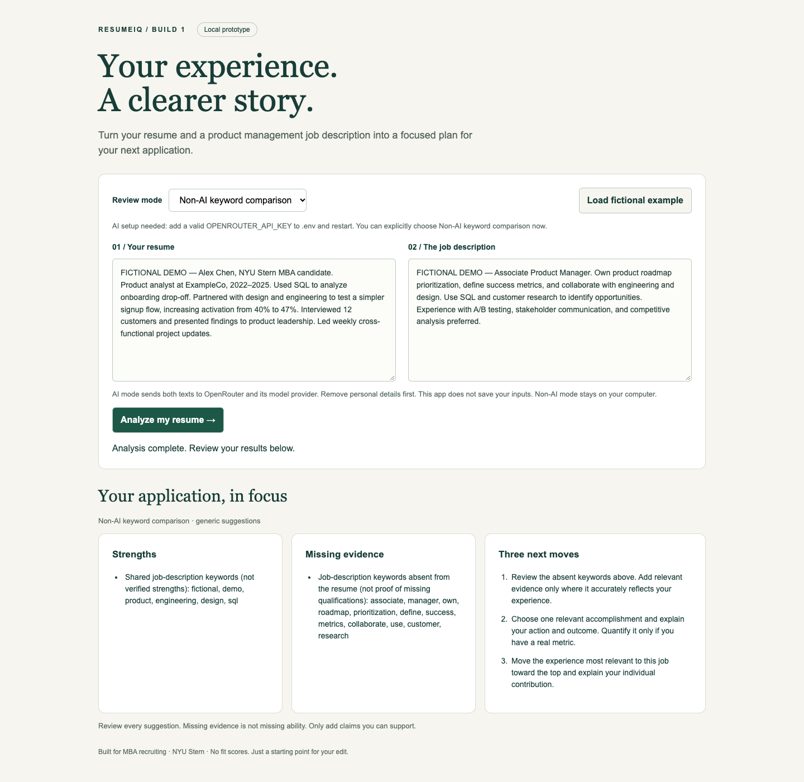

Apply Easier.
Optimize your experience for every role without the hassle.
ResumeIQ is here to ensure your resume accurately reflects your experience for every job.
Local prototype
Status: Local non-AI workflow verified. Server-side OpenRouter integration implemented and tested with simulated responses; live AI review awaits a valid API key. This public page is a showcase, not the running app.

Install dependencies using the setup instructions, run .venv/bin/python server.py in the repository, then open http://127.0.0.1:8000. Setup and demo instructions.
PRD v1 · November 8, 2026
Primary user and reach
An NYU Stern MBA student recruiting for product management positions who has a resume and a specific job posting. Planned outreach: invite a Stern MBA classmate directly through the builder’s school network to try one application. No participant has been confirmed and no user feedback has been collected.
The job to be done
Before: The student manually compares a job posting with their resume, guesses which experiences matter, and rewrites bullets without a clear priority. This is the initial problem hypothesis, not a measured research finding.
After: In one sitting, paste both texts, request a review, read strengths and missing evidence, and use three suggested improvements to make truthful edits. The student reviews and edits their own resume.
One core workflow
Upload a PDF/Word .docx resume or paste text → paste a specific job description → analyze → review strengths, missing evidence, and exactly three suggested improvements.
AI is the intended review mode. The local fallback reports literal keyword overlap and generic editing prompts; it cannot evaluate qualifications, synonyms, or resume quality. Missing evidence never establishes that a candidate lacks a skill.
Three non-goals for Build 1
- General job-title analysis without a specific job description: a possible later feature.
- Resume template design, formatting, or export.
- Job searching, application submission, or applicant tracking integrations.
Simple architecture and main risk
Resume upload or pasted text → local Python server → OpenRouter/model provider → validated result → browser. The key stays on the server. No database or saved resume history. In non-AI mode, the Python server performs a local keyword comparison without sending documents to an external service.
Main risk: A model may misread evidence or suggest unsupported claims. The prompt requests grounded observations and truthful edits; the server checks output shape and exactly three improvements. These checks do not establish analysis quality. Live model testing and a target-user review remain necessary.
Privacy: AI mode sends both input texts to OpenRouter and its provider; their retention policies apply. Remove personal details. This app does not persist inputs or log request contents. Browser form state remains until cleared or closed.
Build 1 log · November 8, 2026
- What works: A local two-input form, fictional sample, explicit AI/non-AI mode selector, three result sections, validation, and user-visible errors. The non-AI workflow ran successfully in headless Chrome. OpenRouter requests run server-side.
- What was learned during implementation: The repository was a documentation template with no app. Python’s standard library was enough for the server. Model JSON still needs application validation; keyword overlap cannot establish candidate qualifications.
- What broke or changed: The existing .env contained a placeholder key, so live AI could not be verified. An explicit non-AI mode supports the local demo. The coding sandbox initially blocked the localhost server; it ran after execution permission was granted. After a session interruption, a duplicate start found the original server still running; browser checks used that existing server.
- Checks: Five automated tests passed: whole-word keyword behavior and three suggestions, placeholder rejection, simulated provider success, sanitized provider failure, and invalid output rejection. JavaScript syntax passed. Browser checks verified the sample result and three suggestions, a 390px layout without horizontal overflow, 400 for invalid input, and 404 for private-file routes.
- Still unverified: A live OpenRouter response, semantic review quality, real-user usefulness, accessibility with assistive technology, and public Pages deployment. No user feedback, learning-exercise completion, or time savings are claimed.
- Costs: No live inference requests were made in this session. Agent/account spending and cumulative project costs have not been supplied or verified; builder to record actual amounts. Non-AI runs make no paid API calls.
- Upload scope update: Added PDF and Word .docx uploads alongside pasted text. Extraction runs locally in memory and fills an editable preview. Ten automated tests passed, including generated document extraction and HTTP upload-to-non-AI-analysis for both formats. Scanned/encrypted PDFs and older .doc files are unsupported. PDF extraction requires the dependency setup linked above. Costs and builder hours for this update have not been recorded.
- Hours: Builder hours not yet recorded. Builder to add actual time before submission.
Next: Configure and test a valid key, personally review a sample output, invite a Stern MBA PM candidate, record actual costs and hours, then publish this page. Build 2 planning will address output quality and analytics. Build 4 evaluation track remains undecided.